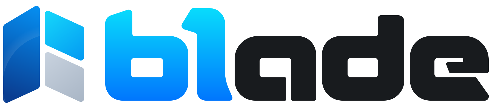

Írd le, ami ismétlődik.
Erőforrások, mezők, nézetek és műveletek PHP-ban vagy moduláris JSON-ban. Az eszköztár ezekből a definíciókból állítja össze az adminfelületet.

PHP 8.4+ · TypeScript · DHTMLX · Moduláris JSON
A 61ade egy helyre hozza az adminalkalmazások visszatérő részeit. PHP backend, DHTMLX-felület és közös eszköztár adja az alapot. Te arra fordíthatod az idődet, amitől a projekted a sajátod lesz.
Demó belépés: demo@example.test 61ade-demo
01Az ötlet
Belépésre, jogosultságokra, űrlapokra és listákra szinte minden projektben szükség van. A 61ade közös alapot ad hozzájuk, hogy együtt működjenek, és ne képernyőről képernyőre kelljen újra megírni őket.
Erőforrások, mezők, nézetek és műveletek PHP-ban vagy moduláris JSON-ban. Az eszköztár ezekből a definíciókból állítja össze az adminfelületet.
Az alkalmazásod saját működését PHP-handlerekkel és TypeScript-modulokkal építheted fel. A publikus eszköztár komponenseket, szolgáltatásokat és bővítési pontokat ad hozzá.
Az üzleti logika, az adatok és az integrációk a projektedhez tartoznak. A 61ade az alattuk működő közös admin infrastruktúrát biztosítja.
02A felület
Minden itt látható képernyőkép a működő 61ade demóból készült, szintetikus adatokkal. Nézz körül, aztán nyisd meg a demót, és próbáld ki magad.
Kétpaneles fájlkezelő mappákkal, folytatható feltöltéssel és szövegszerkesztővel. A fájlhozzáférés ugyanazon a jogosultsági és műveleti rendszeren halad át, mint az alkalmazás többi része.
DokumentációMédiacsempék kép-, hang- és videó-előnézettel. A demóban a médiatár egy digitális kijelző tartalmait gyűjti.
DokumentációNapi, heti és havi nézetek, ismétlődő események és kivételek. A demóban a naptár egy digitális kijelző műsortervét kezeli.
DokumentációVizuális diagramszerkesztő elempalettával, kapcsolatokkal és szerkeszthető tulajdonságokkal. A hálózati topológia demó egy példa arra, mit lehet rá építeni.
DokumentációA képernyőképekre kattintva a teljes felületet láthatod.
03Az alapok
Azok a részek, amelyek csak akkor tűnnek fel, ha hiányoznak. Beépítve kapod őket, és minden új képesség részt vesz bennük.
Jelszavas belépés, választható e-mailes megerősítés, megjegyzett munkamenetek és felhasználókezelés. A választható AuthHandler-integráció külső belépést ad; ehhez a szolgáltató beállítása szükséges.
DokumentációSzerepkörök, objektum- és mezőszintű jogok, szűkíthető API-kulcsok. A hozzáférést a szerver ellenőrzi, a felület által is használt közös műveletvégrehajtón keresztül.
DokumentációSzűrés, rendezés, helyben szerkesztés, validáció, rekordadatok és kapcsolódó nézetek. Kis képernyőn a listák kártyákra váltanak; az asztali fájlkezelő és diagramszerkesztő saját méretkövetelményekkel működik.
DokumentációA regisztrált műveletek szűkített API-kulcsokon át is elérhetők. A támogatott műveleteket auditnapló rögzíti. A listák pollinggal vagy beállított WebSocket-szolgáltatással frissülhetnek; kereshető naplóadmin még nem készült.
DokumentációSaját nézetek, mezőtípusok és parancsok a publikus TypeScript-eszköztárral. Újrahasználható lista-, űrlap-, fájl-, naptár-, diagram- és médiakomponensek, elkülönített sandbox a nem megbízható projekttartalmakhoz.
DokumentációBeépített többnyelvűség, világos és sötét témák, alkalmazásskinek és választható több-bérlős működés SQL-erőforrásokhoz. A tenantonként elkülönített fájltárolás még nem készült el.
DokumentációFolyamatosan fejlődik. A jelenlegi backend PHP, a demó SQLite-ot használ. A backendnyelvtől független szerződés, a PostgreSQL és a JSON-fájlos tárolás későbbi feladat.
04A történet
A 61ade új eszköztár, de a története jóval korábban kezdődött.
DDE
Az ADE előtt ott volt a DDE: egy HTML4-alapú keretrendszer, amely körülbelül húsz ügyfélnél működött hasznosan.
ADE
Az ADE már a harmadik keretrendszer volt, amit életemben készítettem. Teljes egészében egyedül írtam, akkor kezdve a fejlesztését, amikor az AJAX még új, divatos kifejezésnek számított. AJAX-alapú, HTML5-jellegű hibrid felülete számos projektet szolgált bankoknál, távközlési vállalatoknál és rendszerintegrátoroknál.
61ade
Saját munkámból tudom, mitől működik jól egy HTML5 adminfelület PHP backenddel. Ez az eszköztár már AI segítségével készült, az én aktív szakmai irányításommal, a korábbi rendszerek tapasztalataira és tanulságaira támaszkodva.
— sanch, a 61ade készítője
05Készíts valamit
Ingyenes projektekhez a szándék egyszerű: használd ingyen a 61ade-et. Ha pénzt szeretnél keresni vele, előbb keress meg, és meséld el, mire gondoltál.
Ha hasznos volt, örülök egy GitHub-csillagnak vagy pár sornak arról, mire építetted. Egy köszönet mindig jólesik.
A nyilvános demó kitalált fiókokat és adatokat használ. Ezzel a közös fiókkal belépve kipróbálhatod a működő felületet.
demo@example.test61ade-demo06Írj pár sort
Egy kérdés, egy üzleti projekt, vagy csak pár szó arról, hogy hasznos volt. Szívesen olvasnék róla.
sanch@61ade.com